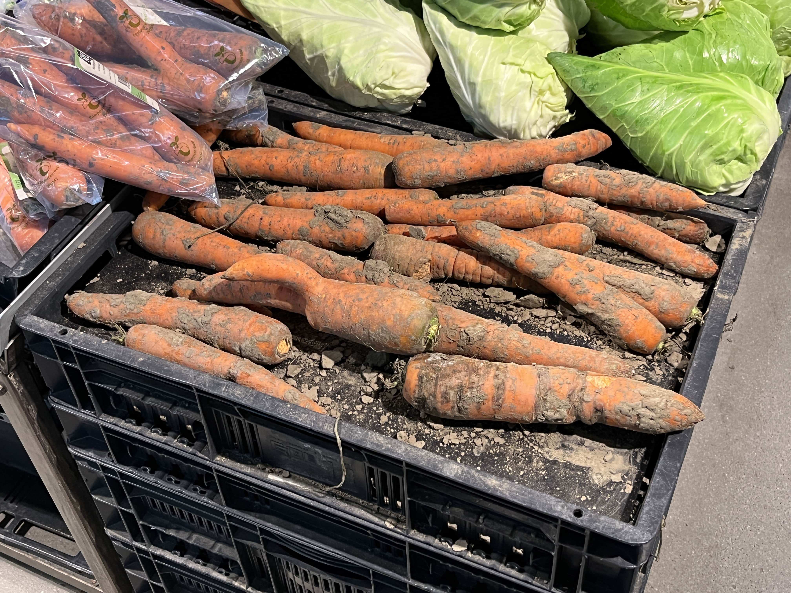
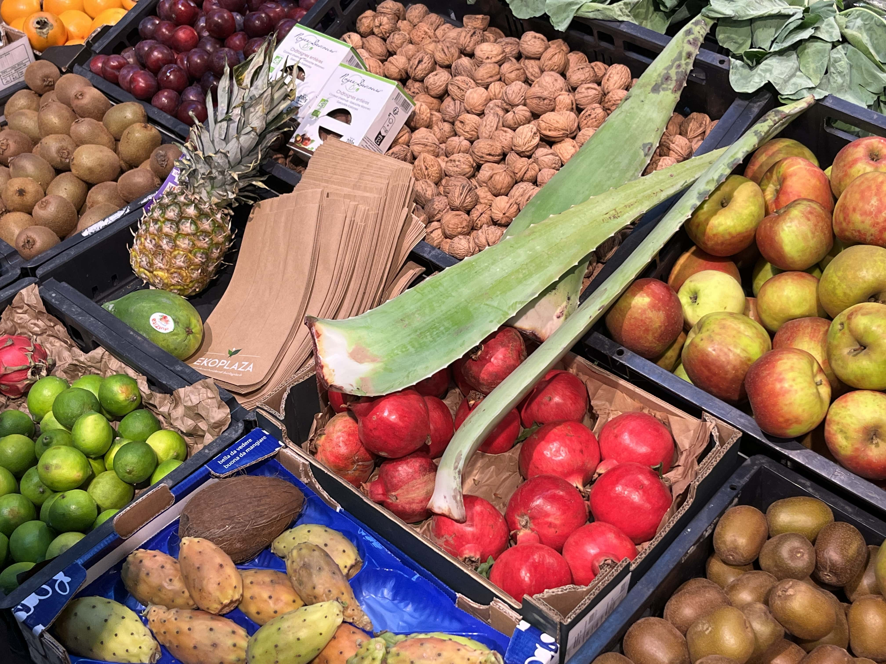

EkoPlaza
Een goede stap om duurzamer te leven is door je bewuster te worden van wat je koopt en waar je dit koopt. Een goed voorbeeld van een plek waar je duurzaam kan kopen is de EkoPlaza.


De EkoPlaza is een verstandige en duurzame optie om boodschappen te doen. Een paar dingen die zij doen om duurzamer te zijn dan concurrenten zijn bijvoorbeeld het gebruik van palmolie vermijden in hun huismerk, biologische producten verkopen, zo min mogelijk plastic gebruiken en door producten te verkopen die duurzaam zijn verbouwd.